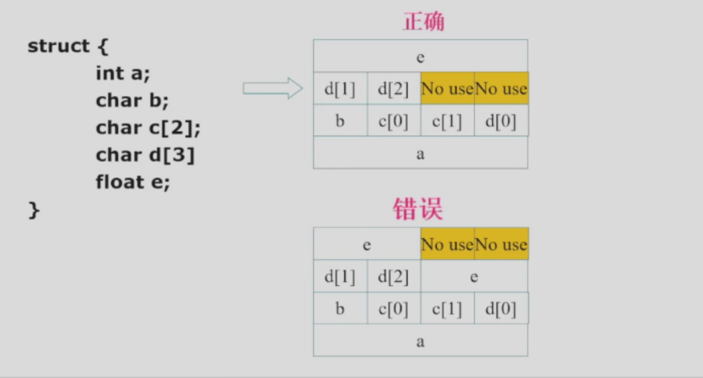
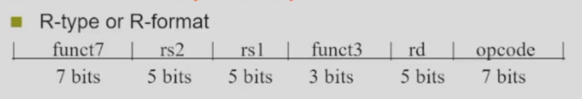
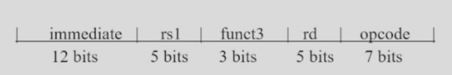
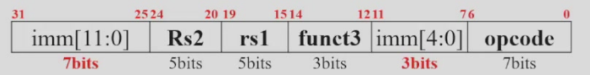
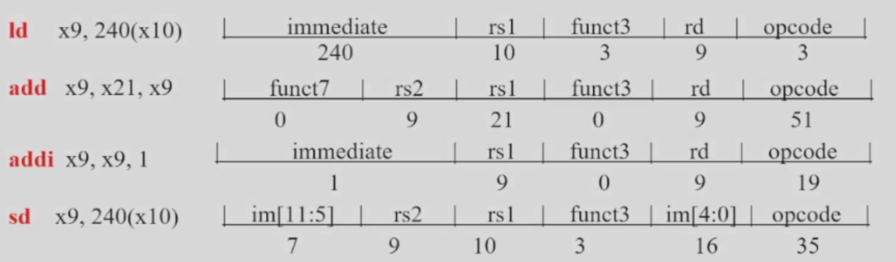
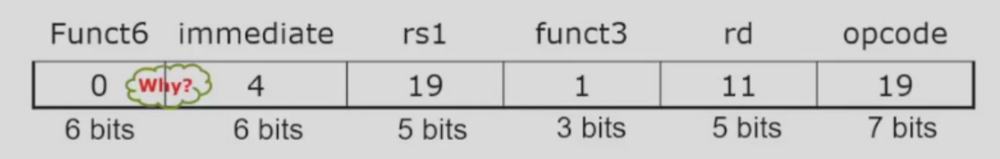
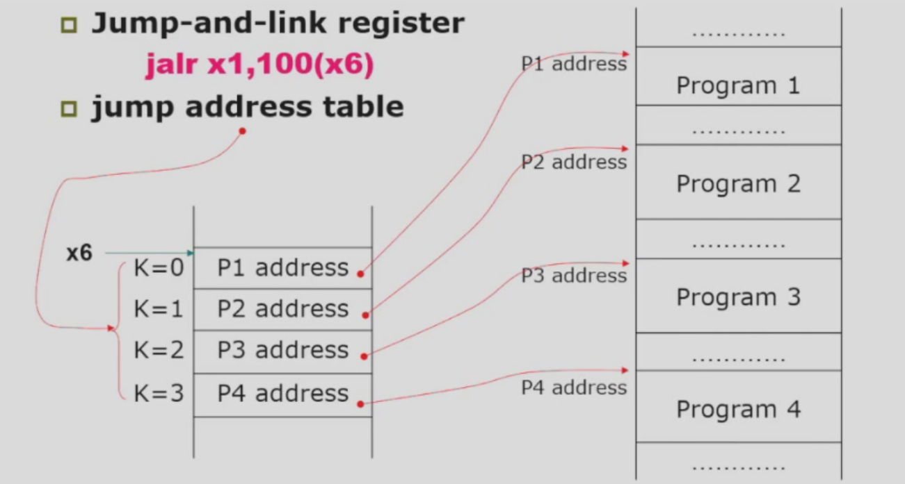
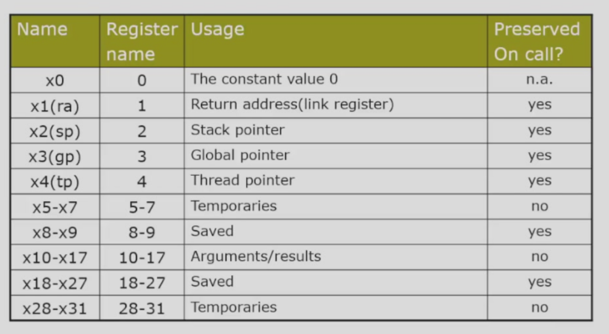
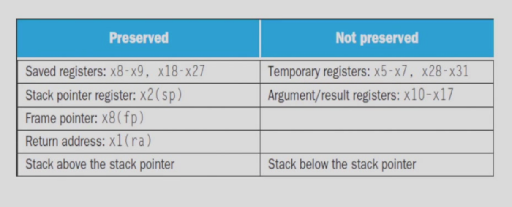
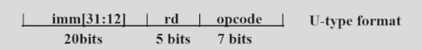

Chapter3：指令：计算机的语言
2.3 Operands of the computer hardware
Arthmetic instructions operands must be registers or immediate。
- 32 registers in RISC-V
- 64-bit wide registers in RISC-V
Note
smaller is faster(寄存器越少越快，一般不超过32个)
For registers in RISC-V, size is 64 bits, which named doublewords。
e.g. Compiling a complex C assignment
f = (g + h) - (i + j)
RISC-V assembly code
add t0, g, h
add t1, i, j
sub f, t0, t1
Memory Operands
Advantages + can save more data + save complex data structures e.g.array and structures
Data transfer instructions + load : from memory to register。 ld: load doubleword + store : from register to memory。 sd: store doubleword
Memory access and contents at those locations
big endian + the high bytes are stored at lower memory addresses + the low bytes are stored at higher memory addresses + Power PC
little endian + the low bytes are stored at lower memory addresses + the high bytes are stored at higher memory addresses + RISC-V
Memory Alignment

因为一次只能读出四字节内存的一行，这样分布不能将float e一次性全部读出。
e.g. compiling with an operand in memory C code
C code : g = h + A[8]
A base address: x22
g address: x20
h address: x21
RISC-V assembly code:
ld x9 , 64(x22)
add x20, x21, x22
more complex code : A[12] = A[8] + h
ld x9, 64(x22)
add x9, x21, x9
sd x9, 96(x22)
constant and immediate operands
How to represent constant e.g g = h + 55
-
constant in memory 基于内存的操作数 load the constant from memory to a register, then use the register as the operand. e.g. suppose constantaddr is the address of the constant 55
assembly ld x9, constantaddr(x3) add g, h, x9 -
immediate operand 立即数操作数 conbine the constant with the instruction。
- avoid the load instuction
- offer version of the instruction
e.g.
addi g, h, 55add 55 because of the instruction 功能测试程序生成常数方式非常累赘，可以用此方法替代，前提是要初始化。 小的操作数比较常见，可以考虑启用这一方法。 constant 0: a register x0
2.4 signed and unsigned numbers
Unsigned binary integers
x = xn-12n-1 + xn-22n-2 + ... + x121 + x020
range: 0 to + 2n - 1 using 64 bits 0 to 264 - 1(18,446,744,073,709,551,615)
2's complement signed integers
x = -xn-12n-1 + xn-22n-2 + ... + x121 + x020
range: - 2n-1 to + 2n-1 - 1
-(-2n-1) can not be represented
signed negation
complement and add 1。
x + x̄ = 11111...1112 = -1
so we have x̄ + 1 = -x
sign extension
for positive numbers, sign extension is the same as zero extension。
for negative numbers, sign extension is the same as one extension。
e.g. 8-bit -> 16-bit
+2: 00000010 -> 00000000_00000010
-2: 11111110 -> 11111111_11111110
in RISC-V, we use :
lb: sign-extend loaded bytes
lbu: zero-extend loaded bytes
2.5 Representing instruction in the computer
mapping register to numbers: map x0 to x31 onto number 1 to 31
tanslating assembly into machine instructione。
R-format

e.g. add, sub
opcode: base operation and format of an instruction
rd: the register destination operand
funct3: an additional opcode field e.g. 我们可以把加减法之类的做成同一个opcode，然后通过funct3来区分是加法还是减法。
rs1: the first register source operand
rs2: the second register source operand
funct7: an additional opcode field
Note
All instructions have the same length in RISC-V(32 bits)。
I-format
e.g. addi, load

-
rs1: source or base register address register number
-
immediate: constant operand or offset added to the base address
S-format

-
rs1: base address register number
-
rs2: source operand register number
-
immediate: offset added to base address
-
split so that rs1 and rs2 always in the same field
e.g.all
A[30] = h + A[30] + 1
(assume h: x21, base addr of A: x10)
ld x9, 240(x10) // temporary register x9 gets A[30]
add x9, x21, x9 // temporary register x9 gets h + A[30]
addi x9, x9, 1 // temporary register x9 gets h + A[30] + 1
sd x9, 240(x10) // store the result back to A[30]

2.6 Logical Operations
Shift Operator
shift left by n bits: 2n * x
属于I型指令

funct6为六位的原因：移位不需要这么多立即数，只要六位 (26=64) 即可
e.g
slli x11, x19 , 4 // reg x11 = reg x19 << 4
OR and XOR
2.7 instructions for making decisions
branch instruction
-
beq : go to the branch if equal
-
bne : go to the branch if not equal
store的立即数是作为数据的地址，而beq的立即数是用于运算的地址(意即加到PC上的数字)，因此二者指令类型不同。
code:if (i==j) f = g + h; else f = g - h;
bne x22, x23, ELSE // go to the ELSE branch since i != j
add x19, x20, x21
beq x0, x0, EXIT // EXIT
ELSE:sub x19, x20, x21
EXIT:
pro :code:while(save[i]!=k) i+=1
assume i, k->x22,x24 base of save->x25
LOOP:slli x10, x22, 3 // reg x10 = i * 8
add x25, x25, x10 // reg x25 = base of save + i * 8
ld x9, 0(x10) // load save[i] into reg x9
bne x9, x24, EXIT // if save[i] == k, go to EXIT
addi x22, x22, 1 // i += 1
beq x0, x0, LOOP // go back to the beginning of the loop, 0 = 0必定跳转
EXIT:
blt : branch if less than
bge : branch if greater than(include ==)
slt : R型指令。set on less than slt: x2, x3, x4 x2=1 if x3 < x4
signed and unsigned : blt&bltu bge&bgeu slt&sltu
e.g.
x22 = 11111....11 x23 = 00000....01
slt: x22 < x23 (-1 < 1) sltu: x22 > x23 (4????... > 1)
slti & sltiu: immediate
Bounds check Shortcut
reduce an index-out-of-bounds check + if (x20 >= x11 | x20 < 0) goto INDEXOUTOFBOUNDS
RISC-V version :
bgeu x20, x11, INDEXOUTOFBOUNDS // excellent way:use negative in unsign numbers to avoid codes to examine "x20 < 0"
Basic Block
a basic block is a sequence of instructions with
- no embedded branches(except at end)
- no branches targets(except at beginning)
Case and Switch
assume f ~ k----x20 ~ x25 x5 contains 4
code:
switch(k) {
case 0: f = i + j; break;
case 1: f = g + h; break;
case 2: f = g - h; break;
case 3: f = i - j; break;
}
jump-and-link register : jalr

x6 refers to the jump address table
RISC-V code:
blt x25, x0, EXIT // if k < 0, go to EXIT
bge x25, x5, EXIT // if k >= 4, go to EXIT
slli x7, x25, 3 // reg x7 = k * 8
add x7, x7, x6 // reg x6 = base of jump address table + k * 8
ld x7, 0(x7) // load the jump address into reg x7
jalr x0, x7 // jump to the jump address
EXIT:
jalr为I型指令。
2.8 Supporting Procedures in Computer hardware
Procedures : 过程 function : 函数
a stored subroutine that performs a specific task based on the parameters with which it is provided
six steps:
- place parameters in a place where the procedure can access them(in register x10~x17)
- transfer control to the procedure
- acquire the storage resources needed for the procedure
- perform the desired task
- place the result value in a place where the calling program can access it
- return control to the point of origin(address in x1)
procedure call: jump and link
jal x1, PROCEDURE_NAME
- address of the following instruction put in x1，待会就从这里跳回来。
- jump to PROCEDURE_NAME
procedure return: jump and link register
jalr x0, 0(x1)
- like jal, but jumps to 0 + address in x1
- use x0 as rd (x0 cannot be changed)
- can also be used for computer jumps e.g. case/switch
Note
不好理解这两位？ jal:跳转到固定的标签或地址。这是一个相对跳转，即跳转到程序中明确指定的某个位置。 jalr:跳转到存储在寄存器中的地址，而不是固定的标签。它是一个间接跳转，目标地址可以动态变化，因此更加灵活。
Using more register
Register using for procedure call:
- x10~x17(a0-a7) are used to pass parameters or return values.x10(a0) is used to return values
- x1: one return address register to return to origin point 返回地址寄存器
Stack: Ideal data structure for spilling registers
- push, pop
- Stack pointer: x2
Stack grow from higher address to lower address
- Push: sp = sp - 8
- Pop: sp = sp + 8
8: RISC-V架构为64位寄存器，每个寄存器占用8个字节。
a simple leaf procedure example:
c code:
long long int leaf_example(long long int g, long long int h, long long int i, long long int j) {
long long int f;
f = g + h - (i + j);
return f;
}
assume:
- agruments g-j are in x10-x13
- f in x20
- temporary registers x5 x6
- need to save x5, x6, x20 on stack
RISC-V code:
addi sp, sp, -24 // ask for 24 bytes of stack space
sd x5, 16(sp) // save x5 on stack
sd x6, 8(sp) // save x6 on stack
sd x20, 0(sp) // save x20 on stack
add x5, x10, x11 // x5 = g + h
add x6, x12, x13 // x6 = i + j
sub x20, x5, x6 // x20 = f = g + h - (i + j)
addi x10, x20, 0 // return value in x10
ld x20, 0(sp) // restore x20 from stack 从栈中恢复三者的值
ld x6, 8(sp) // restore x6 from stack
ld x5, 16(sp) // restore x5 from stack
addi sp, sp, 24 // release stack space
jalr x0, 0(x1) // return to caller
x5-x7 x28-x31 : temporary registers
- not preserved by the callee
x8-x9 x18-x27 : save registers
- if used, the callee use and restore them
Note
临时寄存器：被调用的函数(callee)可以自由地修改这些寄存器的值，而不需要在函数结束时恢复它们的原始值。调用者(caller)在使用这些寄存器之前，应该自行负责保存它们的值(如果需要)。
保存寄存器：被调用的函数(callee)在开始执行之前，应该保存这些寄存器的值，并在函数结束时恢复它们的原始值。这样，调用者(caller)在调用函数之后，可以安全地使用这些寄存器，而不必担心它们的值被修改。
No-leaf procedures
- call other procedures
- for nested call, caller need to save on the stack:
- return address
- any arguments and temporaries needed after the call
- restore from the stack after the call
e.g.
c code:
long long fact(long long n) {
if (n < 1) {
return 1;
} else {
return n * fact(n - 1);
}
}
assume n as well as the result in x10
fact: addi sp, sp, -16 // ask for 16 bytes of stack space
sd x1, 8(sp) // save return address
sd x10, 0(sp) // save argument n
addi x5, x10, -1 // x5 = n - 1
bge x5, x0, L1 // if n >= 1, go to L1
addi x10, x0, 1 // return 1
jalr x0, 0(x1) // return to caller
L1: addi x10, x10, -1
jal x1, fact // call fact(n - 1)
add x6, x10, x0
ld x10, 0(sp) // restore n
ld x1, 8(sp) // restore return address
addi sp, sp, 16 // release stack space
mul x10, x10, x6 // x10 = n * fact(n - 1)
jalr x0, 0(x1) // return to caller
x8: frame point register
x3: global pointer register
Local Data on the Stack
- local data allocated by callee
- C automatic variables
- procedure frame(activation record) 过程帧(激活记录)
- used by some compliers to manage stack storage
Memory Layout 内存布局
- Text: program code
- Static Data: global variables
- static variable in C , constant arrays and strings
- x3 initialized to address allowing +- offsets into this segment
- Dynamic Data: heap
- e.g. c: malloc; java: new
- Stack: automatic storage
RISC-V register convention


2.9 communication with people
unicode: 16/32-bit code for characters
Bytes/Halfword/Word Operations
- RISC-V byte/halfword/word load/store
- load byte/halfword/word: sign extend to 64-bit in rd
- lb rd, offset(rs1)
- lh rd, offset(rs1)
- lw rd, offset(rs1)
- store byte/halfword/word
- sb rs2, offset(rs1)
- sh rs2, offset(rs1)
- sw rs2, offset(rs1)
- load/store unsigned byte/halfword/word (not sign extension but zero extension)
- lbu rd, offset(rs1)
- lhu rd, offset(rs1)
- lwu rd, offset(rs1)
String
- Three choice for representing a string
- put the length of the string in the first position
- an accompanying variable that stores the length
- a character in the end position to mark the end of the string 结束字符
java : first choice c : last choice('\0')
e.g. the process of "strcpy"
c code:
void strcpy(char x[], char y[]) {
int i = 0;
while((x[i]=y[i])!='\0') i++;
}
i ~ x19 ; x's base addr ~ x10 ; y's base addr ~ x11
RISC-V code:
strcpy: addi sp, sp, -8 // ask for 8 bytes of stack space
sd x10, 0(sp) // save x19
add x19, x0, x0 // i = 0, x19->i
L1: add x5, x19, x11 // address of y[i] in x5
lbu x6, 0(x5) // x6 = y[i]
add x7, x19, x10 // address of x[i] in x7
sb x6, 0(x7) // x[i] = y[i]
beq x6, x0, L2 // if y[i] == '\0', go to L2
addi x19, x19, 1 // i++
jal x0, L1 // go to L1
L2: ld x10, 0(sp) // restore x19
addi sp, sp, 8 // release stack space
jalr x0, 0(x1) // return to caller
Optimization for example:
-
strcpy is a leaf procedure
-
allocate i into a temporary register e.g. x28
-- 避免了对栈的依赖，并且不需要额外的指令来保存和恢复x19。
For a leaf procedure
-
The complier exhausts all the temporary registers
-
then use the registers it must save
--> 优先使用临时寄存器
2.10 RISC-V Addressing for Wide Immediate and Addresses
-
Most constants are small, 12 bits is sufficient
-
For the occasional 32 bits constant:
lui rd, constant

-
copies 20-bit constant into the upper 20 bits of rd(imm[31:12])
-
extends bit 31 to imm[63:32] --> ensure the sign as the same
-
clears all lower 12-bit(imm[11:0]) to 0
我们最终想放入寄存器的值是 32 位常数 0x003D0. 先利用lui将高 20 位 976 放入寄存器中，随后利用加法指令加上 低 12 位，即 2304.